Four moves: split the reads across introns, intersect k-mer classes, vote fractionally with EM, normalise what you can.
Learning objectives
- Explain why RNA-seq reads cannot be treated the same as DNA reads, and name the two biological phenomena — splicing, transcript isoforms — that drive the difference.
- Sketch how splice-aware aligners (STAR, HISAT2) extend the seed-and-extend framework from Lecture 2 with long-skip transitions for introns.
- Explain what pseudoalignment is, and why a compatibility class over k-mers is sufficient for transcript-level quantification.
- Set up the EM iteration Salmon / Kallisto run for read-to-transcript assignment, and relate it to iterative soft-decision decoding.
- Convert between raw counts, CPM, TPM, and FPKM, and explain what each normalises for.
- Compute a DESeq2-style size factor from a small count matrix and explain why the median-of-ratios estimator is robust to composition bias.
- State why the Poisson model of Lecture 3 is not enough for RNA-seq counts, and describe the negative-binomial fix.
- Pick the right quantification tool given a specific scientific goal.
Part 1 · 30 min RNA Biology and the Counting Problem
1.1 Why RNA sequencing exists
A genome is a list of parts; a transcriptome is a list of which parts are being used, how much, and when. The same DNA is in every cell of an organism, but a liver cell is not a neuron — the difference is which genes are transcribed, how much, and with what post-transcriptional processing. RNA-seq measures that activity.
Bulk RNA-seq measures an average transcript-abundance profile across a population of cells: "here's how much of each gene the sample was making, averaged over the millions of cells in the tube." It's the workhorse assay of modern biology. Applications:
- Differential expression (DE). Which genes are more or less expressed in condition A vs condition B? The subject of Lecture 6.
- Isoform detection. Which splice variants of a gene are expressed and at what ratios?
- Variant discovery from transcripts (allele-specific expression, fusion transcripts in cancer, A-to-I editing).
- Functional genomics. Knockout / overexpression screens read out through expression changes.
The raw output of a bulk RNA-seq run looks exactly like the raw output of a DNA-seq run — FASTQ files with 150-bp reads, Phred quality scores, the same Illumina or PacBio chemistry. The processing downstream of FASTQ is where RNA diverges.
1.2 Transcription, splicing, and isoforms
Three biological facts drive everything in this lecture.
First: transcription is selective. Only a fraction of the genome is transcribed in any given cell at any given time. Genes have promoters that recruit RNA polymerase; transcription factors bind regulatory regions and turn genes on or off. The abundance of a transcript in a cell is approximately proportional to its production rate times its half-life.
Second: most eukaryotic genes are split. Human genes are typically encoded as a series of exons (the parts that end up in the mature mRNA) separated by introns (the parts that get cut out). After transcription, the spliceosome — a large RNA-protein complex — recognises splice donor (GT) and acceptor (AG) dinucleotides at exon boundaries, cuts the introns out, and joins the exons together. The final mature mRNA is much shorter than the genomic locus: a gene spanning 40 kb of genome may produce a 2 kb mature mRNA after splicing.
Third: one gene, many transcripts. The same gene can be spliced in multiple ways — different combinations of exons assembled into different final mRNAs. These are called isoforms (or splice variants). Human genes average roughly four isoforms each; some have dozens. Isoforms can differ in their protein product, their stability, their localisation, their translation efficiency, or just their 3′ untranslated region.
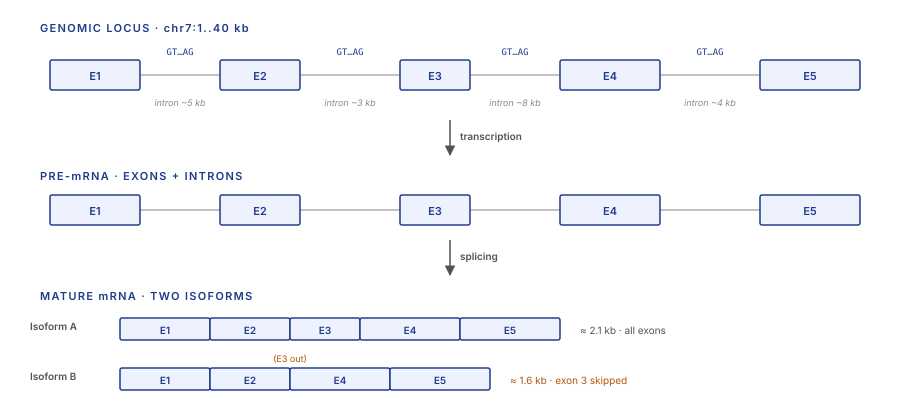
These three facts make RNA-seq a fundamentally different problem from DNA-seq. In DNA-seq, the sample is a near-copy of the reference: one position in the read maps to one position in the genome. In RNA-seq, the sample is a transformed version of the reference: the read's sequence corresponds to the spliced transcript, which is not contiguous in the genome.
1.3 Why naive read-per-gene counting fails
Given the biology in §1.2, the naive pipeline — "align reads with BWA (Lecture 2), count how many reads overlap each gene" — breaks in three ways.
Reads span splice junctions. A short read can straddle the boundary between two exons. In the genome those two exons are separated by an intron, possibly tens of thousands of bases long. A read that spans that junction cannot be aligned contiguously to the genome; a DNA-style aligner would mark it unmapped or split it with random low-quality alignments. STAR and HISAT2 (§2) exist specifically to handle these reads.
Reads from one gene can't be unambiguously assigned to one isoform. A read that lands in an exon shared by three different isoforms of the same gene is ambiguous: we know the gene but not the specific transcript. Naive counting forces a binary choice; Salmon and Kallisto (§3) solve this probabilistically with EM.
Read counts conflate transcript abundance with transcript length. A 10 kb transcript sampled at the same molar abundance as a 1 kb transcript will collect ten times more reads, because each read is drawn from a random position along the transcript. Raw read counts are a biased estimator of molar abundance; you need to normalise by transcript length (§4).
1.4 The RNA-seq pipeline at a glance
Every bulk RNA-seq analysis follows one of two canonical paths. They disagree on the middle stage; they agree on the endpoints.
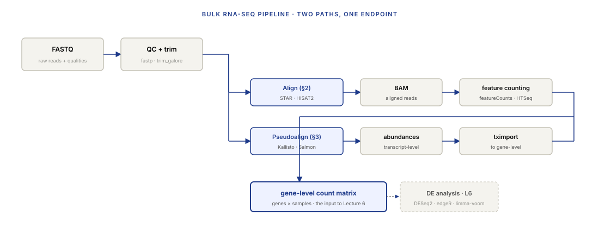
The align-then-count path produces a BAM file and then counts reads overlapping each feature (gene or exon) using featureCounts or htseq-count. The pseudoalign path produces transcript-level abundance estimates directly and never writes a BAM. Both paths end at a gene-level count matrix that DE tools consume.
Part 2 · 50 min Splice-Aware Alignment
2.1 The exon-intron structure problem
A short Illumina read is 150 bp. A typical human gene spans 40 kb of genome. The read comes from the mature transcript — which has the introns already removed. When you try to align that read back to the genome, you need to allow the read to "jump" across intron-sized gaps.
Concretely: imagine an exon of length 100 bp followed by an intron of length 5 kb followed by the next exon. A read that straddles the exon-exon junction will have its first 80 bp aligning to the end of exon 1 and its last 70 bp aligning to the start of exon 2. In between, on the reference, is 5 kb of intron that the read does not contain. The aligner has to recognise this gap as a splice, not as a deletion.
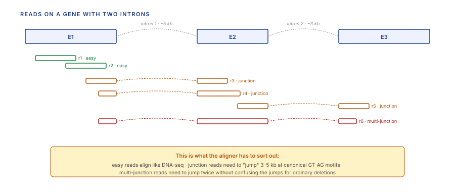
The naive solution — "allow arbitrary gaps in the aligner" — fails because an aligner that tolerates 5 kb gaps would produce millions of false positives. A 150 bp read will contain many positions where the sequence spuriously matches a random 150 bp of genome with a few edits. Legitimate splice junctions are distinguished from garbage by two features: they occur at canonical GT-AG splice-site motifs, and they are annotated in the reference transcriptome. Splice-aware aligners exploit both.
2.2 STAR and the spliced-read HMM
STAR — Spliced Transcripts Alignment to a Reference — is the most widely used splice-aware aligner for short-read RNA-seq. Its design is a careful extension of the seed-and-extend framework from Lecture 2.
STAR has three phases per read:
- Seed search. Instead of looking for one long exact match, STAR looks for the longest maximal mappable prefix (MMP) starting from the first base of the read. This is done with a suffix-array index of the reference genome (callback to Lecture 2 §2.2). The result is a set of seed regions where the read exactly matches some stretch of the genome.
- Seed clustering. Multiple MMPs from a single read are clustered by genomic location. If two MMPs are within ~50 kb of each other on the same chromosome, they probably belong to the same alignment. If they're separated by more than 50 kb, they're either a large SV or the read is multi-mapping.
- Extend with splice awareness. For each cluster, STAR extends the MMPs using a modified Smith-Waterman that allows an unusual move: at any canonical GT…AG motif, the alignment can "jump" forward by the intron length at zero cost. The splice move is explicitly a different operation from an insertion — insertions have a per-base gap-open penalty; splices are free if they land at a canonical motif.
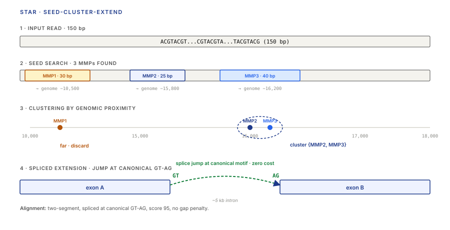
STAR's performance characteristics:
- Memory: ~30 GB for a human-genome index (suffix array over the whole genome).
- Speed: ~100M reads in roughly an hour on 16 cores. Fast enough for routine use.
- Output: coordinate-sorted BAM with
XStags indicating splice strand; optionally a table of detected splice junctions.
2.3 HISAT2 and the hierarchical graph FM-index
HISAT2 solves the same problem as STAR with a different data structure. Instead of a suffix array, HISAT2 uses a hierarchical graph FM-index (HGFM) that extends the FM-index from Lecture 2 to a reference graph — where the graph's nodes are genomic positions and its edges include known splice junctions from an annotation database.
The construction is layered:
- Global index. An FM-index over the whole reference genome, exactly as in Lecture 2 §2.5. Handles most alignment.
- Local indexes. Every ~57 kb of the genome has its own small FM-index, optimised for short extensions. A single read's alignment can "hand off" from the global index to a local index for the tricky last few bases.
- Graph edges. Known splice junctions and common variants (from dbSNP, for example) are encoded as alternative edges in the graph. The FM-index is extended to traverse these edges during search.
The payoff is memory: HISAT2's human index is about 8 GB, four times smaller than STAR's. The tradeoff is that HISAT2 is somewhat less sensitive to novel splice junctions not in its annotation.
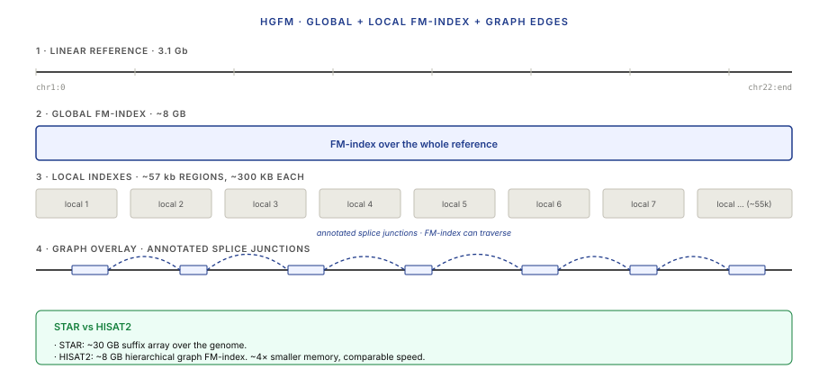
2.4 From BAM to gene counts: featureCounts and HTSeq
Once you have a BAM, counting is mechanical. Two tools dominate:
- featureCounts (part of the Subread package). Fast C implementation. Takes a BAM and a GTF (gene annotation file) and emits a count matrix.
- HTSeq-count. Older Python tool. Slower. Historically the reference for "how counting is supposed to work" — its
intersection-strictmode is the semantics everyone eventually calibrates against.
Both tools have to make a decision for each read: which feature does it count toward? The non-obvious cases:
- A read that overlaps two genes (common in compact genomes or near gene boundaries) — counted toward both, toward neither, or toward "ambiguous"?
- A read that falls partly in an exon and partly in an intron — retained intron or genomic contamination?
- A multi-mapping read (one primary plus several secondary alignments) — split the count, assign to primary only, or drop?
These choices matter more for small effects than for big ones, and every tool has slightly different defaults. The rule: document which tool and which mode you used, because differential expression results are not invariant to counting choice.
Part 3 · 60 min Pseudoalignment and Quantification
3.1 The compatibility-class insight
Here is the observation that reorganised RNA-seq quantification in 2016.
If your goal is transcript abundance — not base-level alignment coordinates — you don't need to know where each read aligns. You only need to know which transcripts the read is compatible with. A read's "compatibility class" is the set of transcripts whose sequence is consistent with the read.
Concretely: suppose you have three transcripts T1, T2, T3, each a few hundred bases long. You extract all the k-mers (say k = 31) from each transcript. Some k-mers are unique to T1, some are shared between T1 and T2, and so on. When a new read arrives, you chop it into its k-mers, look each one up in a hash table that maps k-mer → {set of transcripts containing it}, intersect the sets, and the result is the read's compatibility class: the set of transcripts consistent with every k-mer the read contains.
That's it. No Smith-Waterman, no seed extension, no base-level alignment. The read's contribution to quantification is entirely captured by its compatibility class.
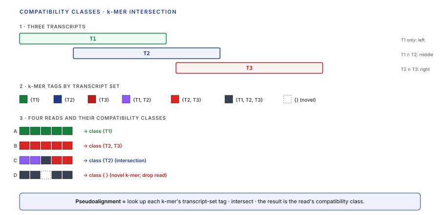
What you give up: exact base-level alignment, which means you can't genotype from RNA-seq reads directly with a pseudoaligner. What you keep: everything you need for quantification.
3.2 Kallisto and the Target de Bruijn Graph
Kallisto was the first pseudoalignment tool to land (Bray, Pimentel, Melsted, Pachter, 2016). The data structure: a Target de Bruijn Graph (T-DBG), which is a de Bruijn graph (callback to Lecture 3 §3.2) built from the transcriptome, with each k-mer node tagged with the set of transcripts that contain it.
The query side: for each read, extract k-mers, walk them along the T-DBG, and intersect the transcript-set tags along the walk. The intersection is the compatibility class. A read that produces an empty compatibility class is either a novel sequence, contaminating DNA, or an artifact — it doesn't contribute to quantification.
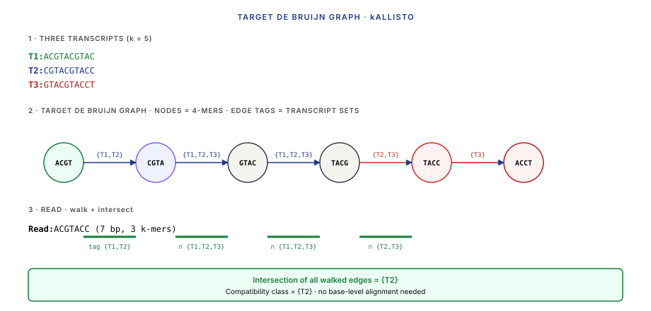
The construction is linear in the transcriptome size (a few minutes for a human transcriptome at k = 31); the query is amortised O(read length). A Kallisto quantification of 30M RNA-seq reads against the human transcriptome runs in under 10 minutes on a laptop.
3.3 Salmon and selective alignment
Salmon (Patro et al., 2017) is pseudoalignment with refinements. Its core idea is the same — compatibility classes over k-mers — with two additions.
Quasi-mapping (Srivastava et al. 2016): Salmon's original fast mode matched k-mers to transcripts using an enhanced suffix array rather than a T-DBG, and explicitly tracked the approximate position of the match within the transcript. This cost a little speed but let Salmon correct for positional biases — reads don't come from a uniform distribution along a transcript; there's 3′ bias from polyA selection, 5′ bias from degradation, and position-dependent GC biases. Knowing (approximate) read position within the transcript lets the quantification model these biases.
Selective alignment (Salmon 1.0, 2019): Salmon's default mode now is a hybrid. Fast k-mer matching identifies candidate transcripts; a fast (ungapped, banded) Smith-Waterman is then performed only on those candidates to produce a proper alignment score. The output is compatibility-class-flavored but with an alignment-quality filter that rejects false matches from highly similar paralogs.
The net effect: Salmon 1.0 on default settings is nearly as fast as Kallisto, nearly as accurate as STAR + RSEM, and handles positional / GC / sequence biases explicitly. For bulk RNA-seq quantification in 2024+, Salmon is the pragmatic default.
3.4 Expectation-Maximization for read-to-transcript assignment
Compatibility classes are ambiguous. A read in a shared exon of three transcripts has compatibility class {T1, T2, T3} — we know the read came from one of those three, but not which.
The EM algorithm resolves this probabilistically. The model: assume each read was generated by picking a transcript with probability proportional to its abundance and then picking a position within the transcript. The likelihood of observing the read's compatibility class, given transcript abundances θ = (θ₁, θ₂, …, θₙ), is
where ℓₜ is the length of transcript t (longer transcripts get more reads at the same molar abundance, so we divide by length). Summing log-likelihoods over all reads gives the full data likelihood L(θ).
We want to maximise L(θ) over θ ≥ 0, ∑θₜ = 1. Closed-form solution doesn't exist because the log-sum structure couples the transcript abundances. EM handles it exactly.
E-step — compute the posterior probability that each read came from each compatible transcript, given the current estimate of abundances:
zᵣ,ₜ is the "fractional vote" that read r assigns to transcript t. It's a real number between 0 and 1; if the read is unambiguously from one transcript, zᵣ,ₜ = 1 for that transcript and 0 for the others.
M-step — update the abundance estimate by summing the fractional votes and normalising:
Iterate. Each iteration is linear in the number of reads times the average compatibility class size. Convergence is typically 100–1000 iterations; each iteration is milliseconds.
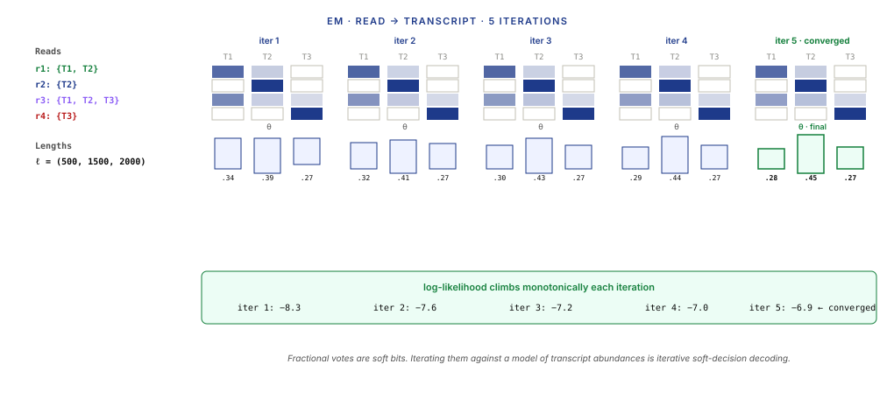
3.5 RSEM and the model-based alternative
RSEM (RNA-Seq by Expectation-Maximization, Li & Dewey 2011) was the gold-standard quantifier before pseudoalignment. It runs Bowtie (base-level alignment) against the transcriptome, then applies the same EM procedure as Salmon/Kallisto on the alignment results. The conceptual logic is identical; the difference is where compatibility classes come from — from actual alignments rather than from k-mer matches.
RSEM is slower (CPU-hours per sample on human data) but historically more interpretable because the alignments are available. For 2024+ work, Salmon or Kallisto handle 99% of use cases; RSEM is used mainly when someone already has STAR alignments and wants quantification without re-running the alignment step.
Part 4 · 55 min Count Models and Normalisation
4.1 From counts to expression: what are we actually measuring?
After alignment or pseudoalignment, the output is a count matrix: rows are genes (or transcripts), columns are samples, and each cell is the number of reads assigned to that gene in that sample.
That count is not expression. It is expression × library depth × transcript length × technical bias. To compare genes within a sample, between samples, or against a reference, we need to remove the systematic factors and keep only the biological signal.
Three categories of bias matter:
- Library depth. A sample sequenced to 50M reads will produce counts ~2× larger than the same sample sequenced to 25M reads. Any cross-sample comparison must correct for depth.
- Transcript length. At equal molar abundance, a 10 kb transcript gets ~10× more reads than a 1 kb transcript, because each read is sampled from a random position along the transcript. Any cross-gene comparison within or across samples must correct for length.
- Library composition. If one highly-expressed gene soaks up 50% of reads in sample A but only 10% in sample B, then every other gene in sample A appears deflated relative to sample B even if its absolute expression is the same. Correcting for this is what DESeq2 / edgeR size factors do — not the same as simple depth correction.
4.2 CPM, TPM, FPKM — what each normalises for
Three units dominate RNA-seq reporting.
CPM (counts per million) — normalise for library depth only. For gene g in sample s with raw count cₛ,g and total library depth Dₛ:
CPM makes samples of different depth comparable gene-by-gene but does not normalise for transcript length — a long gene will have a larger CPM than a short gene at the same molar abundance.
FPKM (fragments per kilobase per million) — normalise for both depth and gene length:
FPKM is CPM divided by gene length in kilobases. RPKM is the same for single-end reads (counting reads rather than fragments); FPKM is for paired-end.
TPM (transcripts per million) — normalise for length first, then for depth:
The key difference: TPM first divides each gene's count by its length, then normalises so that the per-sample sum of all TPMs equals 10⁶. FPKM does the normalisations in the opposite order. The consequence: TPM values always sum to 10⁶ across genes in a sample (so TPM is a proportion); FPKM values sum to some sample-dependent number (so FPKM is not a proportion and cannot be directly compared across samples without care).
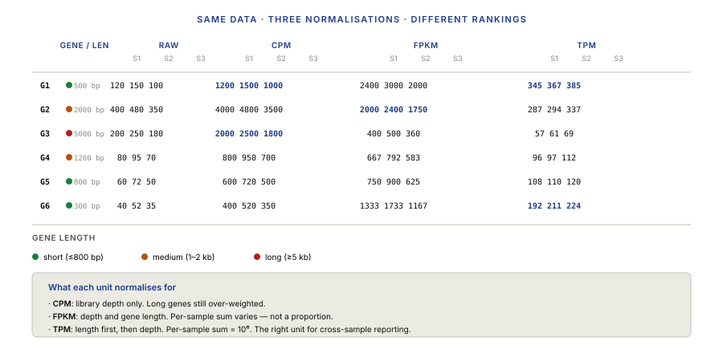
4.3 Size factors and library composition
Depth normalisation (CPM) assumes that two samples with different library depths differ only in depth. That's usually false.
Imagine sample A is a blood sample dominated by a few highly expressed hemoglobin transcripts, and sample B is a similar blood sample but with globin depletion performed (a common protocol choice). Both samples are sequenced to the same depth. In sample A, globins eat 40% of reads; every other gene's CPM is deflated by 40%. In sample B, globins eat 2%; the other genes' CPMs look 40% higher. If you just compare CPMs between A and B, you'll conclude that every non-globin gene is 40% upregulated in B, when in truth it's just composition bias.
DESeq2's median-of-ratios estimator is the canonical fix:
- For each gene g, compute the geometric mean of its counts across all samples.
- For each sample s, compute the ratio: gene count in s / gene's geometric mean.
- The sample's size factor is the median of those ratios across genes.
- Divide all counts in that sample by its size factor. Those are the "normalised counts."
The reasoning: if the distribution of ratios for a sample is centred on 1, the sample is at population average depth. If it's centred on 2, the sample's depth is 2× population average. The median is robust to a small number of very highly (or very lowly) expressed genes hijacking the estimator.
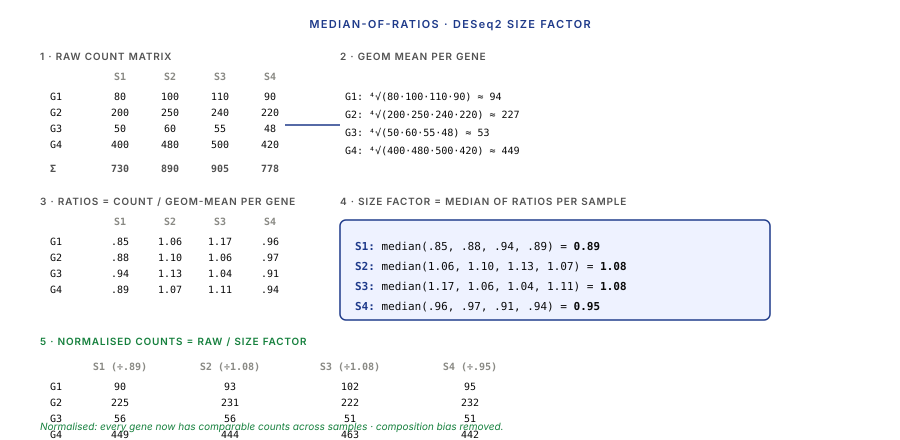
edgeR uses a closely related method called TMM (trimmed mean of M-values) that additionally trims outlying genes before averaging. For bulk RNA-seq, DESeq2 median-of-ratios and edgeR TMM give nearly identical results; the differences matter only at extreme library composition.
4.4 The count distribution and why Poisson isn't enough
Lecture 3 introduced the Poisson distribution as the natural model for read counts — if reads are drawn uniformly at random from a transcriptome, the number of reads falling on any given feature is Poisson-distributed with mean proportional to that feature's molar abundance.
For bulk RNA-seq, Poisson is too tight. A Poisson distribution has variance equal to its mean (var[X] = λ when X ~ Poisson(λ)). Empirical RNA-seq data have variance much larger than the mean, especially for highly expressed genes. The excess variance comes from biological sources — cell-to-cell expression variability, subtle differences in library prep between replicates, slight variations in sequencing depth interacting with composition.
The fix is the negative binomial distribution, which is a Poisson with a gamma-distributed rate parameter. The NB has two parameters — mean μ and dispersion α — with variance μ + α·μ². The α·μ² term is the overdispersion; it's zero for pure Poisson. Biological-replicate RNA-seq data typically has α in the range 0.01–0.3, depending on gene expression level.
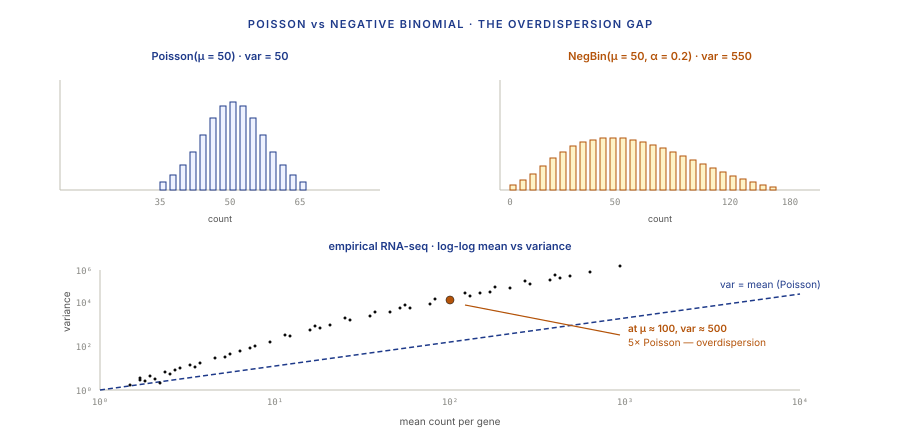
4.5 Ribo-seq, CLIP-seq, and RNA-seq variants
Bulk RNA-seq measures one quantity: transcript abundance. But cells regulate gene expression through several other layers — translation rate, RNA-protein binding, RNA modification, RNA degradation — each of which has its own dedicated sequencing assay. The library prep + counting machinery you've learned for bulk RNA-seq carries over directly; only the protocol upstream of sequencing changes.
Ribo-seq (ribosome profiling, Ingolia et al. 2009) measures translation rather than transcription. RNase-digest a cell extract, leaving only the ~28-nt mRNA fragments protected by translating ribosomes; sequence the footprints. The result is per-codon ribosome occupancy across the transcriptome.
The killer application is translational efficiency (TE):
$\text{TE}_g = \dfrac{\text{ribo-seq counts on gene } g}{\text{RNA-seq counts on gene } g}$
A gene with high mRNA but low ribosome occupancy is transcribed but not translated — invisible to RNA-seq alone. TE is the single most important diagnostic for translation control. Stress responses, cancer, and viral infection all reshape TE without proportional mRNA changes.
Ribo-seq also detects upstream ORFs (uORFs) — short ORFs in 5' UTRs that regulate downstream translation by trapping or stalling ribosomes. uORF activity is condition-dependent and explains a large fraction of the residual mRNA-protein correlation gap. Tools: Plastid, Ribotaper, RiboCode for ORF detection; xtail and ribodiff for differential-TE testing.
CLIP-seq (cross-linking immunoprecipitation, Ule 2003; iCLIP / eCLIP variants are the modern workhorses) measures RNA-protein binding. UV-crosslink RNA-binding proteins to their bound RNAs; immunoprecipitate the RBP; sequence the protected RNA fragments. The result is a transcriptome-wide footprint of where one specific RBP binds.
Modern variants achieve nucleotide-resolution: iCLIP and eCLIP use library-prep tricks that record the precise crosslink site. The ENCODE eCLIP atlas covers ~150 RBPs across two human cell lines — the empirical reference for RNA-protein interactions.
CLIP-seq drives:
- Splicing-factor binding maps (SF1, U2AF, SRSF1, etc.).
- 3'-UTR regulation (HuR, AUF1, miRNA RISC components).
- m6A reader / writer / eraser binding (METTL3, YTHDF1-3).
- Therapeutic target discovery for splice-modifying ASOs (e.g., nusinersen target validation).
Tools: PureCLIP, omniCLIP, CLIPper for peak calling; the ENCORE / ENCODE eCLIP consortium provides browser tracks per RBP.
Other RNA-seq variants worth recognising:
- m6A-seq / MeRIP-seq: maps N6-methyladenosine sites on mRNAs.
- 5'-RACE / CAGE: maps transcription start sites to base resolution.
- 3'-end seq (PAS-Seq, QuantSeq): maps polyadenylation sites; cheaper than full RNA-seq for differential expression.
- NET-seq / GRO-seq / PRO-seq: maps active RNA Polymerase II positions; measures nascent transcription.
- SLAM-seq / TimeLapse-seq: metabolic labelling to distinguish newly-transcribed from steady-state RNA; measures synthesis vs degradation rates.
All of these reuse the same downstream stack — alignment, counting, normalisation, NB-model differential testing — so the ribo-seq workflow inherits the entire bulk-RNA-seq pipeline you've just learned. What changes is the upstream library-prep step and the biological interpretation of the resulting counts.
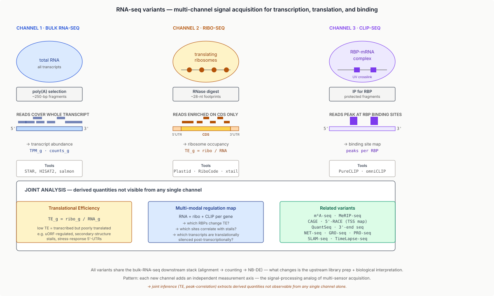
Part 5 · 25 min What You Take Away
5.1 When to use which tool
The RNA-seq tool landscape is rich, but the choice narrows quickly with the goal in mind.
| Goal | Recommended tool |
|---|---|
| Gene-level counts, standard bulk DE | Salmon → tximport → DESeq2 (default for 2024+) |
| Same, with full alignments preserved | STAR → featureCounts → DESeq2 |
| Transcript-level (isoform) quantification | Salmon with --validateMappings |
| Low-cost quick quantification | Kallisto |
| Long-read RNA-seq (Iso-Seq, ONT direct RNA) | Minimap2 in spliced mode + IsoQuant / Bambu |
| Fusion-transcript detection in cancer | STAR-Fusion or Arriba (both need STAR alignments) |
| RNA variant calling | STAR two-pass + GATK HaplotypeCaller RNA mode |
Salmon + DESeq2 is the right default for the vast majority of bulk RNA-seq in 2024. If you don't know which tool to use, use that.
5.2 Pitfalls and gotchas
The RNA-seq literature is dotted with papers whose conclusions were later invalidated by a pipeline bug. The recurring culprits:
- Strandedness misconfigured. Easiest bug to produce, hardest to detect from the count matrix alone. Always verify strand with
infer_experiment.pybefore counting. - Annotation drift. A GTF from Ensembl release 110 and one from GENCODE v44 do not agree on every gene's exons. Pipelines that mix annotations from different sources can produce counts that don't match what's reported elsewhere.
- Multi-mapping reads. 5–15% of reads map to multiple locations, usually because of ribosomal RNA, paralogs, or repetitive regions. Salmon / Kallisto handle this via EM; STAR + featureCounts requires you to choose
--M(count all) or--primary(count only primary alignment) and the choice matters. - Duplicates. PCR duplicates in RNA-seq are not the same as in DNA-seq. For bulk RNA-seq from a polyA protocol, the same mRNA molecule can legitimately produce multiple reads starting at the same genomic position — marking them all as duplicates and removing them is a mistake for bulk RNA-seq. Mark them if you want, remove them only if the assay is single-cell (where UMIs handle the deduplication correctly, covered in Lecture 7).
- rRNA contamination. Ribosomal RNA can make up 30–80% of total RNA in a cell; library prep usually depletes or selects against it, but imperfectly. An RNA-seq library with 40% rRNA looks like it has 60% of the depth it should — and the remaining fraction behaves like a lower-depth library for every non-rRNA gene.
- Batch effects between runs. Even in the same lab with the same protocol, library prep batches can introduce systematic variation larger than biological effects. Randomise your experimental samples across batches, or at least log which batch each sample was in so it can be regressed out in L6's DE analysis.
5.3 Looking ahead to Lecture 6
Lecture 6 takes the count matrix produced by this lecture and answers the biological question "which genes are differentially expressed between two conditions?" The statistical framework is the negative-binomial model from §4.4. The tools are DESeq2, edgeR, and limma-voom. The main ideas:
- Fit a negative-binomial generalized linear model per gene. Estimate the dispersion parameter. Shrink it using empirical Bayes across genes.
- Test each gene's condition coefficient against zero. The output is a log fold-change, a standard error, a p-value, and an adjusted p-value (BH for FDR control at ~20k-gene scale — callback to Lecture 4's variant filtering).
- Interpret the gene list. Introduce GSEA and over-representation analysis as the standard tools for turning a thousand-gene result into a biological story.
The bridge from this lecture to L6 is conceptual: quantification produces an estimate; DE is inference about that estimate under a noise model. The negative binomial is the noise model; DESeq2's linear model is the inference framework.
Wrap-up · 10 min Takeaways, homework, and next lecture
What you should take away
- RNA ≠ DNA for counting purposes. Splicing and isoforms mean reads don't map contiguously, and transcript abundance is not the same as reads-per-gene. The rest of the lecture follows from that.
- Splice-aware aligners extend seed-and-extend with long-skip transitions. STAR and HISAT2 are both HMM-flavored; they allow intron-sized gaps only at canonical GT-AG splice sites, with annotation guidance to suppress false positives.
- Pseudoalignment dispenses with base-level alignment for quantification. A read's compatibility class — the set of transcripts whose k-mers are consistent with the read — is sufficient for EM-based quantification. This is 10–100× faster than alignment + counting with comparable accuracy.
- EM handles read-to-transcript ambiguity probabilistically. Salmon / Kallisto iterate fractional read-to-transcript assignments to convergence; each iteration is fast, and convergence is typically 100–1000 iterations.
- Normalisation has three layers: depth, length, composition. CPM handles depth only; TPM handles depth and length; DESeq2 size factors handle composition. Use the right normalisation for the question.
- Counts are overdispersed Poisson, a.k.a. negative binomial. Pure Poisson variance (= mean) underestimates real RNA-seq variance. The NB's dispersion parameter captures that excess; Lecture 6 turns this into a DE framework.
Next lecture
Differential expression with DESeq2, edgeR, and limma-voom. Empirical-Bayes dispersion shrinkage, Wald and LRT tests, multiple testing at the 20k-gene scale, and a bridge to gene-set enrichment analysis.
Homework
- Download a public RNA-seq dataset (e.g., GTEx v8 whole blood, 10 samples). Quantify with Salmon in
--validateMappingsmode against a GENCODE v44 transcriptome. Report runtime and compare against a STAR + featureCounts run on the same data for one sample. Which is faster? By how much? Are the gene-level counts similar? - Using the count matrix from problem 1, compute CPM, TPM, and DESeq2 size-factor-adjusted counts for ten randomly selected genes. Compare them. In what cases do the three metrics rank the same set of genes differently?
- Implement EM for a toy RNA-seq quantification problem by hand: three transcripts of length [500, 1500, 2000], five reads with specified compatibility classes [{T1,T2}, {T2}, {T1,T2,T3}, {T3}, {T1}]. Initialise uniform abundances; run 10 iterations of EM; report the converged abundances. Use the EM Iteration Visualizer artifact to verify.
- Plot the mean-variance relationship for the count matrix from problem 1. Overlay the Poisson line (var = mean). How much above the Poisson line does your data sit at mean count 100? At mean 1000? Estimate the effective dispersion parameter.
- You are given a Salmon quantification and a STAR + featureCounts quantification of the same sample. Gene MALAT1 has count 10,000 in Salmon and 7,800 in STAR+featureCounts. Explain three reasons this might happen.
Recommended reading
- Bray, N. L., Pimentel, H., Melsted, P., & Pachter, L. (2016). Near-optimal probabilistic RNA-seq quantification. Nature Biotechnology 34, 525–527.
- Patro, R., Duggal, G., Love, M. I., Irizarry, R. A., & Kingsford, C. (2017). Salmon provides fast and bias-aware quantification of transcript expression. Nature Methods 14, 417–419.
- Dobin, A., Davis, C. A., Schlesinger, F., et al. (2013). STAR: ultrafast universal RNA-seq aligner. Bioinformatics 29, 15–21.
- Kim, D., Paggi, J. M., Park, C., Bennett, C., & Salzberg, S. L. (2019). Graph-based genome alignment and genotyping with HISAT2 and HISAT-genotype. Nature Biotechnology 37, 907–915.
- Li, B., & Dewey, C. N. (2011). RSEM: accurate transcript quantification from RNA-Seq data with or without a reference genome. BMC Bioinformatics 12, 323.
- Mortazavi, A., Williams, B. A., McCue, K., Schaeffer, L., & Wold, B. (2008). Mapping and quantifying mammalian transcriptomes by RNA-Seq. Nature Methods 5, 621–628.
- Pertea, M., Kim, D., Pertea, G. M., Leek, J. T., & Salzberg, S. L. (2016). Transcript-level expression analysis of RNA-seq experiments with HISAT, StringTie and Ballgown. Nature Protocols 11, 1650–1667.
Appendix — timing summary
| Block | Time | Cumulative |
|---|---|---|
| Part 1 — RNA Biology and the Counting Problem | 30 min | 0:30 |
| Part 2 — Splice-Aware Alignment | 50 min | 1:20 |
| Part 3 — Pseudoalignment and Quantification | 60 min | 2:20 |
| Part 4 — Count Models and Normalisation | 55 min | 3:15 |
| Part 5 — What You Take Away | 25 min | 3:40 |
| Wrap-up | 10 min | 3:50 |
Total: ~3h 50min of content.